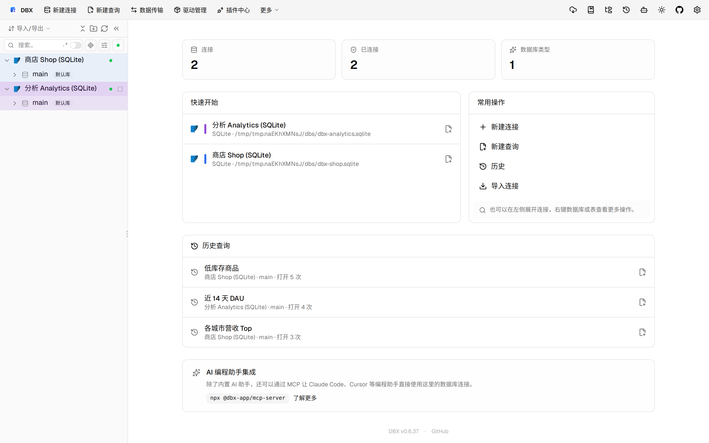
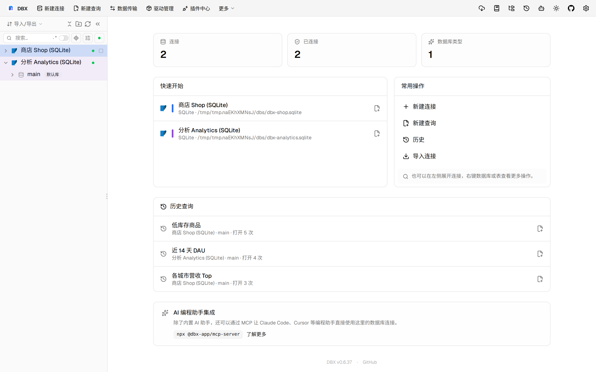
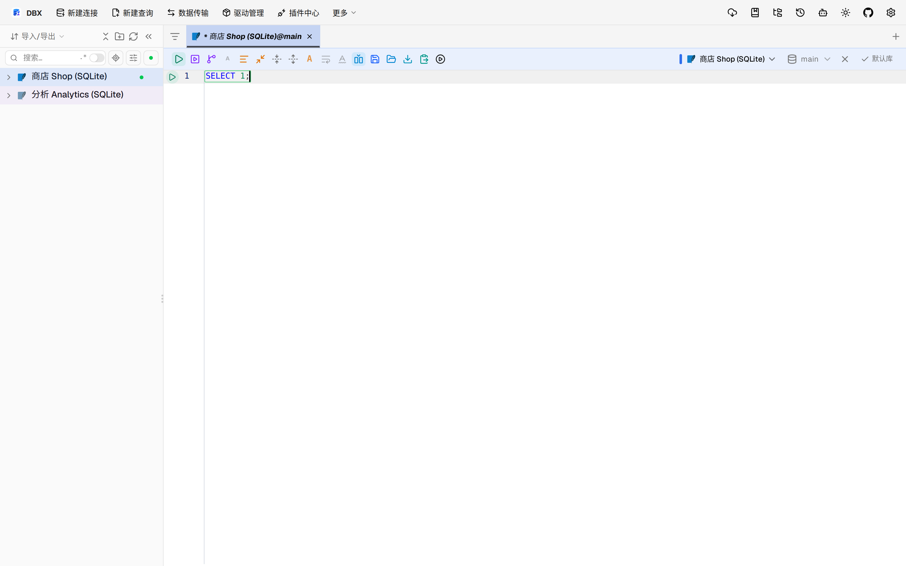

#11426 界面预览
commit 30c374d · 回到 PR · 这次改动只影响手动事务提交完成后的会话清理逻辑：如果用户在提交尚未返回时切换了模式/目标并开启了新的事务，旧提交结束时不再误删新事务会话和脏标记。界面上可观察的点是：事务状态在目标切换后提交完成时应保留为新会话，而不是回到空状态。
⚠️ 这次录制有 7 步没能按计划执行；带 ⚠️ 的截图拍摄于步骤失败之后，画面未必是说明文字所描述的状态。
红线是鼠标走过的轨迹，红色圆环是一次点击；底部文字是这一步在做什么。多个场景各自从应用初始状态开始。空格暂停，← → 逐段查看。

⚠️ 进入查询页并显示事务入口 · 连接树已展开，查看两个 SQLite 连接的数据库节点

⚠️ 进入查询页并显示事务入口 · 打开订单表后的数据网格，查看表格页与事务相关编辑状态入口

⚠️ 切换执行目标并保留新会话 · 查看查询页中的执行与事务状态区域，作为提交前的参照
⚠️ 切换执行目标并保留新会话 · 查询历史与当前查询上下文，用来说明提交/切换动作发生的位置